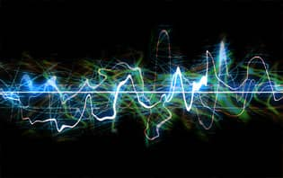

A Little Music
@That-feeling:
That feeling when Eminem hears a hip-hop song playing on the radio for the first time — a really great song.
Do you get the same feeling?
See also
Articles
- When an Artist Suddenly Sings in 100 Different Languages
- Song of the Day: 14 September 2020
- Song of the Day: 3 September 2020
- Song of the Day: 2 September 2020
- Song of the Day: 1 September 2020
- Song of the Day: 31 August 2020
- Song of the Day: 30 August 2020
- Song of the Day
